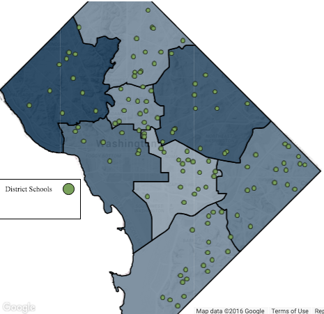
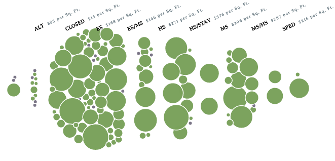

In the late 1990s, DC public schools were on the brink of collapse. Thousands of fire code violations led to temporary closings. A GAO report found over 70% of DC public schools had inadequate features, such as windows and heating. All had asbestos, many lead paint.
Since then the District has spent billions of dollars restoring and modernizing its schools, some to award-winning levels. But much of that investment has been opaque. Last year the DC Auditor found the school modernization program lacks accountability, transparency, and basic financial management.
Code for DC in partnership with 21st Century School Fund has launched forgenerationstocome.org to increase transparency on the billions spent on DC school facilities. The website shines a light on previously unseen data, over 20 years of historical and future planned spending on school facilities. Interactive visualizations slice and dice the data to show where money was spent and how individual schools compare.
Uneven modernization funding across District
Facility spending per square foot, DCPS schools 1998-2015 by ward
(darker blue indicates more spending per square foot)
Screenshot from forgenerationstocome.org
Mapping facility spending reveals geographic disparities in funding. Wards 3 and 5 have received the most facility spending per squate foot basis, while Wards 6 and 8 have received the least. Ward 1, with $123 spent per square foot, has received almost one-third of the amount of Ward 3. Funding also differs by grade level, shown below. Higher grade levels on average received more funding than lower and a greater share of elementary schools have received limited funding compared middle or high schools.
More Funding per Square Foot for Higher Grade Levels on Average
Facility spending per square foot, DCPS schools 1998-2015 by grade level
(larger bubble size indicates more spending per square foot)
Screenshot from forgenerationstocome.org
Last week members of the Code for DC project team, including myself, and 21st Century School Fund presented the website to DC City Council as part of discussions on future facility spending budget to high praise. We hope it is used to improve transparency, accountability, and equity in school facility spending going forward. Go to forgenerationstocome.org to discover the data for yourself.
About this Project: Collecting and visualizing over 20 years of DC school facility spending was a herculean task made possible by the expertise of Nancy Huvendick and Mary Filardo of 21st Century School Fund and Code for DC volunteers Tom Beach, Giulia Campanella, Amanda Hess, Tim Lee, Nick Sam, Nick Skelsky, and myself. Technical details can be found on the project's Github page.